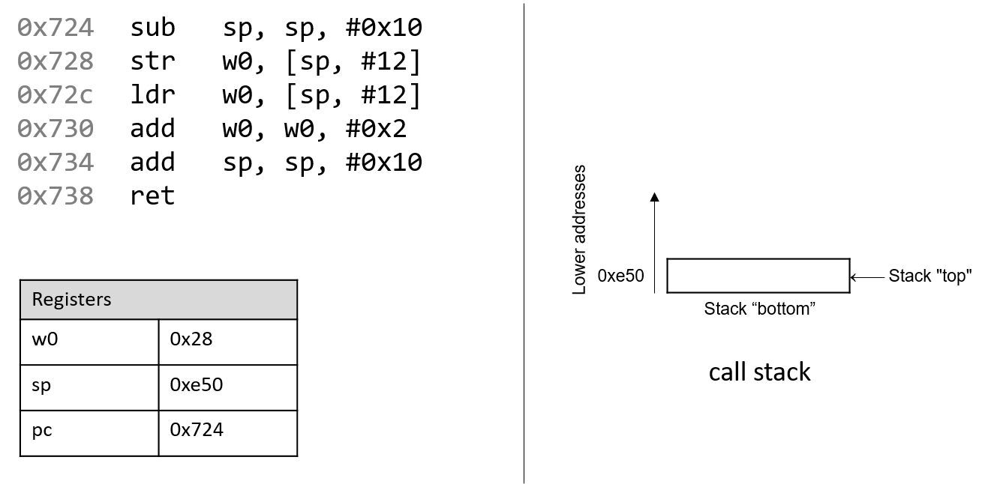
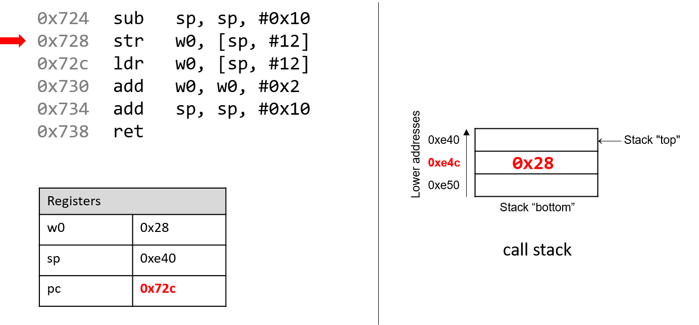
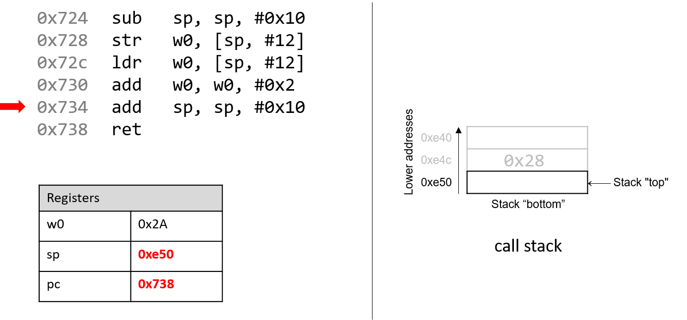

9.2. Các lệnh thông dụng (Common Instructions)
Trong phần này, chúng ta sẽ thảo luận về một số lệnh ARM assembly thường gặp. Bảng 1 liệt kê các lệnh nền tảng nhất trong ARM assembly.
| Instruction | Translation |
|---|---|
ldr D, [addr] | D = *(addr) (nạp giá trị trong bộ nhớ vào thanh ghi D) |
str S, [addr] | *(addr) = S (lưu giá trị S vào vị trí bộ nhớ *(addr)) |
mov D, S | D = S (sao chép giá trị của S vào D) |
add D, O1, O2 | D = O1 + O2 (cộng O1 với O2 và lưu kết quả vào D) |
sub D, O1, O2 | D = O1 - O2 (lấy O1 trừ O2 và lưu kết quả vào D) |
Bảng 1. Các lệnh thông dụng nhất
Vì vậy, chuỗi lệnh:
str w0, [sp, #12]
ldr w0, [sp, #12]
add w0, w0, #0x2
được dịch như sau:
- Lưu giá trị trong thanh ghi
w0vào vị trí bộ nhớ được chỉ định bởisp + 12(hay*(sp + 12)). - Nạp giá trị từ vị trí bộ nhớ
sp + 12(hay*(sp + 12)) vào thanh ghiw0. - Cộng giá trị
0x2vào thanh ghiw0và lưu kết quả vàow0(hayw0 = w0 + 0x2).
Các lệnh add và sub trong Bảng 1 cũng hỗ trợ việc duy trì tổ chức của program stack (hay call stack). Hãy nhớ rằng stack pointer (sp) được compiler dành riêng để quản lý call stack. Như đã đề cập trong phần program memory, call stack thường lưu trữ các biến cục bộ và tham số, đồng thời giúp chương trình theo dõi quá trình thực thi của chính nó (xem Hình 1). Trên các hệ thống ARM, execution stack phát triển về phía địa chỉ thấp hơn. Giống như mọi cấu trúc dữ liệu stack, các thao tác diễn ra ở “đỉnh” của call stack; do đó sp “trỏ” tới đỉnh stack, và giá trị của nó là địa chỉ của đỉnh stack.

Hình 1. Các phần của không gian địa chỉ của một chương trình
Các lệnh ldp và stp trong Bảng 2 hỗ trợ di chuyển nhiều vị trí bộ nhớ cùng lúc, thường là đưa dữ liệu vào hoặc ra khỏi program stack. Trong Bảng 2, thanh ghi x0 chứa một địa chỉ bộ nhớ.
| Instruction | Translation |
|---|---|
ldp D1, D2, [x0] | D1 = *(x0), D2 = *(x0+8) (nạp giá trị tại x0 và x0+8 vào các thanh ghi D1 và D2) |
ldp D1, D2, [x0, #0x10]! | x0 = x0 + 0x10, sau đó D1 = *(x0), D2 = *(x0+8) |
ldp D1, D2, [x0], #0x10 | D1 = *(x0), D2 = *(x0+8), sau đó x0 = x0 + 0x10 |
stp S1, S2, [x0] | *(x0) = S1, *(x0+8) = S2 (lưu S1 và S2 vào các vị trí *(x0) và *(x0+8)) |
stp S1, S2, [x0, #-16]! | x0 = x0 - 16, sau đó *(x0) = S1, *(x0+8) = S2 |
stp S1, S2, [x0], #-16 | *(x0) = S1, *(x0+8) = S2, sau đó x0 = x0 - 16 |
Bảng 2. Một số lệnh truy cập nhiều vị trí bộ nhớ
Tóm lại, lệnh ldp nạp một cặp giá trị từ địa chỉ trong thanh ghi x0 và từ địa chỉ x0 + 0x8 vào các thanh ghi đích D1 và D2. Ngược lại, lệnh stp lưu cặp giá trị từ các thanh ghi nguồn S1 và S2 vào địa chỉ trong x0 và x0 + 0x8. Giả định ở đây là các giá trị trong thanh ghi có kích thước 64-bit. Nếu dùng thanh ghi 32-bit, các offset bộ nhớ sẽ là x0 và x0 + 0x4.
Ngoài ra, ldp và stp còn có hai dạng đặc biệt cho phép cập nhật x0 đồng thời. Ví dụ, lệnh stp S1, S2, [x0, #-16]! nghĩa là trước tiên trừ x0 đi 16 byte, sau đó lưu S1 và S2 vào [x0] và [x0+0x8]. Ngược lại, lệnh ldp D1, D2, [x0], #0x10 nghĩa là trước tiên nạp giá trị tại [x0] và [x0+8] vào D1 và D2, rồi cộng thêm 16 byte vào x0. Các dạng đặc biệt này thường được dùng ở phần đầu và cuối của các hàm có nhiều lời gọi hàm khác, như chúng ta sẽ thấy sau này.
9.2.1. Kết hợp tất cả: Một ví dụ cụ thể hơn
Hãy xem xét kỹ hơn hàm adder2:
//adds two to an integer and returns the result
int adder2(int a) {
return a + 2;
}
Và code assembly tương ứng:
0000000000000724 <adder2>:
724: d10043ff sub sp, sp, #0x10
728: b9000fe0 str w0, [sp, #12]
72c: b9400fe0 ldr w0, [sp, #12]
730: 11000800 add w0, w0, #0x2
734: 910043ff add sp, sp, #0x10
738: d65f03c0 ret
Mã assembly bao gồm một lệnh sub, tiếp theo là các lệnh str và ldr, hai lệnh add, và cuối cùng là một lệnh ret.
Để hiểu cách CPU thực thi tập lệnh này, chúng ta cần xem lại cấu trúc của program memory.
Hãy nhớ rằng mỗi khi một chương trình được thực thi, hệ điều hành sẽ cấp phát address space (không gian địa chỉ) mới cho chương trình đó (còn gọi là virtual memory — bộ nhớ ảo). Khái niệm virtual memory và khái niệm liên quan là process sẽ được trình bày chi tiết hơn ở Chương 13; hiện tại, bạn chỉ cần hiểu rằng process là sự trừu tượng hóa của một chương trình đang chạy, và virtual memory là vùng bộ nhớ được cấp phát cho một process.
Mỗi process có một vùng bộ nhớ riêng gọi là call stack. Lưu ý rằng call stack nằm trong vùng process/virtual memory, khác với các thanh ghi (register) vốn nằm trong CPU.
Hình 2 mô tả trạng thái mẫu của call stack và các thanh ghi trước khi thực thi hàm adder2.

Hình 2. Execution stack trước khi thực thi
Hãy chú ý rằng stack phát triển về phía địa chỉ thấp hơn. Tham số truyền vào hàm adder2 (hay a) theo quy ước được lưu trong thanh ghi x0. Vì a có kiểu int, nó được lưu trong component register w0, như thể hiện trong Hình 2. Tương tự, vì hàm adder2 trả về một giá trị kiểu int, nên component register w0 cũng được dùng để chứa giá trị trả về thay vì x0.
Các địa chỉ gắn với các lệnh trong code segment của program memory đã được rút gọn thành 0x724–0x738 để hình minh họa dễ đọc hơn. Tương tự, các địa chỉ gắn với call stack segment đã được rút gọn thành 0xe40–0xe50 từ dải địa chỉ thực tế 0xffffffffee40 đến 0xffffffffee50. Thực tế, địa chỉ của call stack nằm ở vùng địa chỉ cao hơn nhiều so với địa chỉ của code segment.
Hãy chú ý đến giá trị ban đầu của các thanh ghi sp và pc: lần lượt là 0xe50 và 0x724. Thanh ghi pc (program counter) cho biết lệnh tiếp theo sẽ được thực thi, và địa chỉ 0x724 tương ứng với lệnh đầu tiên trong hàm adder2. Mũi tên đỏ (góc trên bên trái) trong các hình tiếp theo biểu thị trực quan lệnh đang được thực thi.

Lệnh đầu tiên (sub sp, sp, #0x10) trừ hằng số 0x10 khỏi giá trị của stack pointer, và cập nhật sp với kết quả mới. Vì sp chứa địa chỉ đỉnh stack, thao tác này sẽ mở rộng stack thêm 16 byte. Lúc này sp chứa địa chỉ 0xe40, trong khi thanh ghi pc chứa địa chỉ của lệnh tiếp theo sẽ thực thi, tức 0x728.

Hãy nhớ rằng lệnh str lưu trữ giá trị từ một thanh ghi vào bộ nhớ. Do đó, lệnh tiếp theo (str w0, [sp, #12]) sẽ đặt giá trị trong w0 (giá trị của a, tức 0x28) vào vị trí trên call stack tại sp + 12, tức 0xe4c. Lưu ý rằng lệnh này không thay đổi nội dung của thanh ghi sp; nó chỉ lưu một giá trị lên call stack. Sau khi lệnh này thực thi, pc tăng lên địa chỉ của lệnh tiếp theo, tức 0x72c.

Tiếp theo, lệnh ldr w0, [sp, #12] được thực thi. Hãy nhớ rằng ldr nạp giá trị từ bộ nhớ vào một thanh ghi. Khi thực thi lệnh này, CPU thay thế giá trị trong w0 bằng giá trị tại địa chỉ sp + 12 trên stack. Mặc dù thao tác này có vẻ dư thừa (0x28 được thay bằng 0x28), nhưng nó thể hiện một quy ước: compiler thường lưu tham số hàm vào call stack để dùng sau, rồi nạp lại vào thanh ghi khi cần. Một lần nữa, giá trị trong sp không bị ảnh hưởng bởi thao tác str. Với chương trình, “đỉnh” stack vẫn là 0xe40. Sau khi lệnh ldr thực thi, pc tăng lên 0x730.

Sau đó, lệnh add w0, w0, #0x2 được thực thi. Hãy nhớ rằng lệnh add có dạng add D, O1, O2 và đặt kết quả O1 + O2 vào thanh ghi đích D. Vì vậy, add w0, w0, #0x2 cộng hằng số 0x2 vào giá trị trong w0 (0x28), kết quả là 0x2A được lưu vào w0. Thanh ghi pc tăng lên địa chỉ lệnh tiếp theo, tức 0x734.

Lệnh tiếp theo là add sp, sp, #0x10. Lệnh này cộng 16 byte vào địa chỉ trong sp. Vì stack phát triển về phía địa chỉ thấp, việc cộng 16 byte vào sp sẽ thu nhỏ stack, đưa sp trở lại giá trị ban đầu là 0xe50. Thanh ghi pc sau đó tăng lên 0x738.
Hãy nhớ rằng mục đích của call stack là lưu trữ dữ liệu tạm thời mà mỗi hàm sử dụng khi thực thi trong ngữ cảnh của một chương trình lớn hơn. Theo quy ước, stack sẽ “mở rộng” ở đầu hàm và trở lại trạng thái ban đầu khi hàm kết thúc. Do đó, thường thấy cặp lệnh sub sp, sp, #v (v là hằng số) ở đầu hàm và add sp, sp, #v ở cuối hàm.

Lệnh cuối cùng là ret. Chúng ta sẽ nói kỹ hơn về ret trong các phần sau khi bàn về lời gọi hàm, nhưng hiện tại chỉ cần biết rằng ret chuẩn bị call stack để trả về từ một hàm. Theo quy ước, thanh ghi x0 luôn chứa giá trị trả về (nếu có). Trong trường hợp này, vì adder2 có kiểu trả về int, giá trị trả về được lưu trong component register w0, và hàm trả về giá trị 0x2A, tức 42.